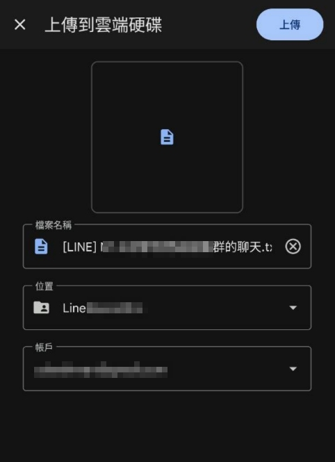
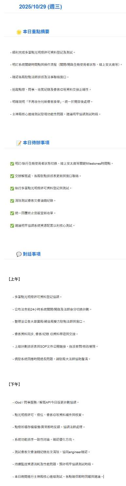

從雜亂到清晰：地端 AI 如何重塑 Line 群組溝通並確保隱私
一個利用地端 AI 將 Line 對話自動轉化為每日摘要的解決方案，不僅將團隊從資訊焦慮中解放，更確保了對話內容的絕對機密。
痛點：被群組訊息淹沒的絕望
Line 群組是現代團隊不可或缺的工具，但它也帶來了新的挑戰。當群組跟對話量暴增，重要資訊就如同漂浮在汪洋中的瓶中信，難以捕捉。
資訊遺漏
重要的決策、待辦事項、客戶回饋，很容易在快速滾動的訊息中被忽略，導致專案延誤或錯誤。
時間浪費
每天需花費大量時間回溯對話，手動整理摘要，這項工作既耗時又缺乏價值。
溝通不同步
不是每個人都有時間看完所有訊息，導致團隊成員間資訊不對稱，影響協作效率與決策品質。
核心優勢：確保資料隱私與在地化理解
如果使用雲端 AI 服務，處理包含敏感資訊的對話紀錄始終存在著資料外洩的風險。為了解決這個根本問題，此方案改為使用完全在地端部署的 AI 模型，特別整合了聯發科優化的 Breeze-7B 模型。這不僅確保了資料的絕對私密，更能精準理解台灣的在地用語、慣例和溝通情境，讓摘要結果更貼近真實的對話原意。
這意味著所有的對話資料都在您自己的環境中進行處理，絕對不會上傳到外部雲端 AI 服務。這不僅符合最嚴格的隱私法規與企業資安要求，也讓團隊可以安心地利用 AI 提升效率，無需擔心機密外洩。
解決方案：一個確保隱私的 7x24 小時地端 AI 智慧助理
我意識到這個普遍存在的問題後，主動設計並開發了一個「AI 智慧助理」。它透過 n8n 自動化平台，串連雲端儲存、地端大型語言模型 (On-Premise LLM) 與電子郵件，打造一個確保資料隱私的全自動資訊處理流程。
自動化流程藍圖 (地端模型)
這就是 AI 助理的大腦。它自動監控、讀取、並使用地端的 Ollama 模型進行理解與摘要，最後自動派送。整個過程無需人工干預，且確保對話紀錄的機密性。

唯一的輸入：原始對話紀錄
唯一要做的，就是將 Line 的對話紀錄（一個純文字檔）丟到指定的雲端資料夾。
每日的清晰產出：HTML 郵件摘要
AI 助理會自動將摘要整理成一份精美、易讀的 HTML 報告，包含「重點摘要」和「待辦事項」，每日準時送到團隊成員的信箱。
影響：創造可量化的商業價值
這個解決方案不僅提升了效率，更為溝通品質與決策能力帶來了實質的商業效益。
釋放高價值人力
100%
將每日近半小時的整理時間降至零，更能專注於策略規劃、客戶溝通等更具價值的任務。
提升任務準確性
60%+
透過 AI 自動生成待辦清單，有效減少因人工遺漏而導致的任務延誤或錯誤，提升專案執行力。
加速資訊獲取
2x
能快速掌握每日進展與關鍵議題，無需人工整理提取，讓解讀大量訊息的速度加倍。
我的角色與貢獻
- 商業痛點洞察: 敏銳地識別出團隊在日常溝通中普遍存在的效率瓶頸，並將其轉化為一個可透過技術解決的商業問題。
- AI 解決方案設計: 提出將大型語言模型（LLM）應用於工作流程的想法，並設計出從資料輸入到價值產出的完整 AI 應用藍圖。
- 端到端流程建構: 獨立完成整個自動化流程的開發、測試與部署，串連多個系統，確保方案穩定可靠。
- 價值導向思維: 始終從「為團隊創造價值」的角度出發，專注於解決方案能否帶來實際的效率提升與溝通改善。